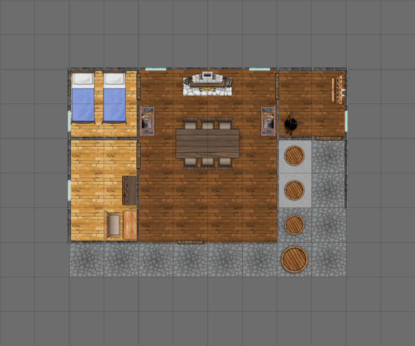

Candler’s Factory¶
Candler’s factory complex has three buildings.
The fat-rendering building is set well back from the street. This can stink so badly, it makes people sick. When it’s not in use, it still smells of rotting meat.
The second building is where soap is made. There are fire-pits to make ash. There are barrels to make lye from the ash, and a shed where the lye and fat are combined to make soap. The chemical smells from the lye are eye-wateringly bad.
The final building is where candles are made. This is straightforward, and involves little more than reheating the rendered fat so it flows into the molds. This is where Candler can be found.

Candler’s Factory complex¶
Scale: Hex = 10m (30’)
Candler, the candle-maker, is not a direct connection to Sir Bond. He acts like he’s going to take you to Sir Bond’s castle. In the end, he’s too busy.
He’s a fanatical follower of the Jackal: the head of the Jackal spy organization in White Water.
He’s got a very smooth presentation of the Cult of the Jackal. He starts with questions about your dissatisfaction with the power the earl’s have and how this results in chaos in the kingdom overall.
“Don’t you feel that the status quo isn’t working?” he asks. “You’ve seen it yourself, waylaid on a royal highway by bandits.”
(He ignores any attempt to correct him about the goblins.)
His relationship with the Cult of the Jackal is revealed in pieces. It’s a difficulty Moderate to get him to provide details of who he meets and where he meets them. While he’s nominally a “secret” agent, the fact that the guards know him means he’s operating in the open, with impunity. Indeed, he makes the claim that the bandit army expedites trade by keeping the greedy folks in City of Eagles from interfering.
“The road is a war zone,” he’ll say, glancing over his shoulder, “and I think a sturdy bunch of folks with the right kind of attitude can calm things down.”
He’s actively recruiting highwaymen to waylay people along the road between White Water and Eagles. This part of his role is similar to the bartender at the Fox’s Tail in the City of Eagles.
GM Note
He doesn’t really know much of the bigger picture. He is willing to hire the party as highwaymen. Be at the Wild Mare tavern first thing tomorrow morning.
If the party takes his offer, there’s an inn near the Wild Mare tavern, where rates are cheap for people who know his favorite color.
“This week, it’s red,” he says with a wink. “Other weeks, other colors.”
If the party insists on seeing Sir Bond, he hasn’t got time. The city’s not big, the castle’s easy to find.
Candler: Agility 3D, fighting +2, melee combat +2, Coordination 2D+2, Physique 3D+2, Intellect 2D+2, cultures +1, reading/writing +1, scholar +1, speaking +1, trading +1, traps +1, Acumen 3D, crafting +1, disguise +1, gambling +1, hide +1, streetwise +1, Charisma 3D, intimidation 2D, Extranormal 2D. Advantages: Contacts (R1), Bargeman and Jackal Temple, Disadvantages: Quirk (R2), Always glancing around nervously; Employed (R2), Temple of the Jackal; Quirk (R2), Voyeur; Quirk (R1), Secret identity as spymaster, Special Abilities: Uncanny Aptitude (R2), Hardiness, +2 damage resistance, Move: 10, Strength Damage: 2D, Fate Points: 1, Character Points: 5, Body Points: 20, Description: Jackal Spy Master – City of White Water.